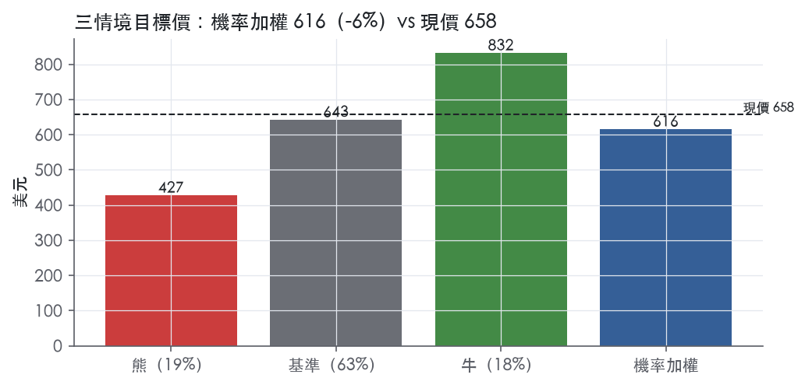
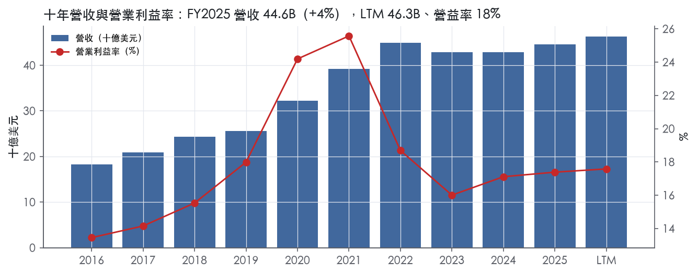
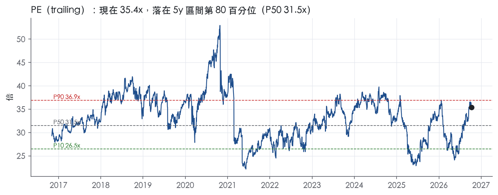
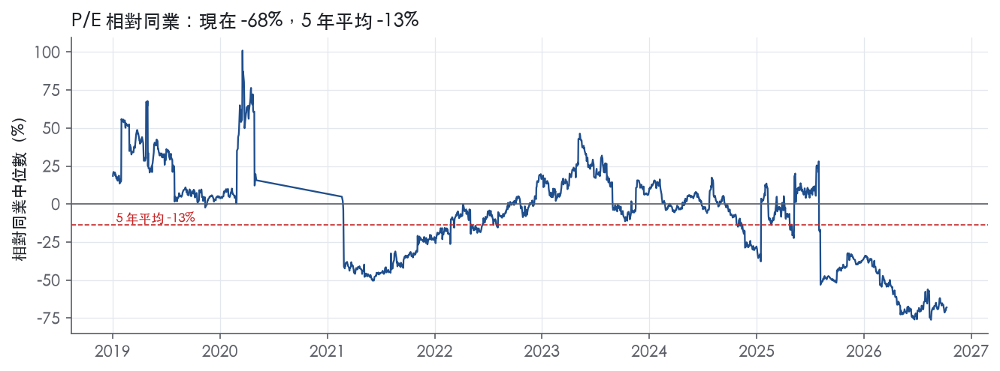
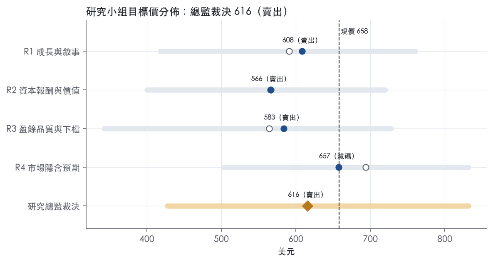
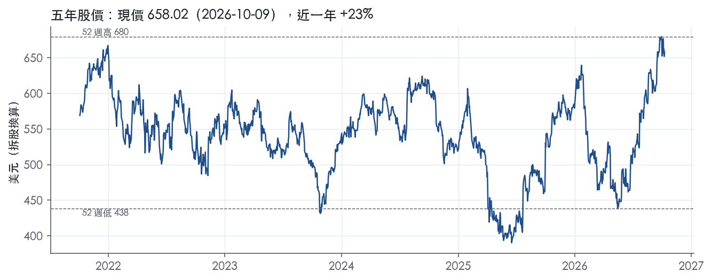

評等總表 › 醫療保健 › TMO
成長已入價，倍數小幅回落，偏空｜評等 賣出｜目標價 616
| 評等 | 賣出（邊界，鄰近減碼） |
| 12 個月目標價 | 616 美元 |
| 現價 | 658.02 美元（2026-10-09） |
| 預期報酬 | 股價 -6.4%＋股息 0.3%＝總報酬 -6.1%；同業籃門檻 9.4%，超額 -15.6% |
| 估值方法 | P/E 32.0x，套在第 5–8 季的EPS（也就是一年後的未來四季） |
| 三情境 | 熊 427／基準 643／牛 832 |
| 研究流程 | 四位研究員兩輪辯論＋研究總監裁決 |
| 資料來源 | SEC EDGAR XBRL、Tiingo、FRED（全免費） |
成長已入價，倍數小幅回落，偏空（研究總監裁決，四位研究員兩輪辯論後）
評等 賣出（邊界，鄰近減碼）｜12 個月目標價 616 美元（總監三情境機率加權 636 與研究員中位數 596 各半）｜現價 658.02（2026-10-09）
預期報酬：股價 -6.4%＋股息 0.3%＝總報酬 -6.1%。同業籃門檻 9.4%，超額 -15.6%，離減碼的分界不到三個百分點，屬邊界評等（落在其他級距的機率約四成）。
估值方法：P/E 32.0x，套在第 5–8 季的EPS（也就是一年後的未來四季）。三情境：熊 427（19%）／基準 643（63%）／牛 832（18%）。
什麼會讓研究總監改變看法：FY2026Q3 有機成長 ≥7% 且 FY2027 指引有機 ≥6%，加上 FY2026 年報淨負債／EBITDA 由 3.47x 明顯回落，我會把倍數上調到 35–36x、立場轉中性；反之 Q3 有機 <3% 或 Analytical Instruments 利潤率再降，熊機率提高到三成。
| 過去四季（實際，FY2026Q2） | 未來四季 | 第 5–8 季 | 第 9–12 季 | |
|---|---|---|---|---|
| 營收（B） | 46.3B | 49.6B | 52.3B | 55.2B |
| 營收成長 | 7.2% | 7.0% | 5.5% | 5.5% |
| 營業利益率 | 17.6% | 17.8% | 18.0% | 18.3% |
| EPS（美元） | 18.58 | 18.25 | 20.08 | 22.22 |
| EPS 成長 | 7.4% | -1.8% | 10.1% | 10.6% |
| 每股股息（美元） | 1.80 | 1.80 | 1.80 | 1.80 |
| P/E（現價） | 35.4x | 36.1x | 32.8x | 29.6x |
| 股息殖利率（現價） | 0.3% | 0.3% | 0.3% | 0.3% |
過去四季為申報數字；預測為研究總監的假設、程式計算。倍數與殖利率都用現價計算，用來看現價對應各期獲利的高低。
| 情境 | 機率（歷史） | 故事 | 未來四季營收成長 | 第 5–8 季營益率 | 倍數 | 目標價 | 股價漲跌 |
|---|---|---|---|---|---|---|---|
| 熊 | 19%（16%） | 對應風險表第 2 條（關稅壓利潤率）、第 3 條（FY2027 聯邦撥款與中國使有機退回 1–2%）、第 4 條（槓桿迫使回購放慢）；營益率微調為 16.8／16.5／16.5%，因 H1 已印出 16.9%／17.4% 且營收仍正成長 | 3.0% | 16.5% | 26.0x | 427 | -35.1% |
| 基準 | 63%（66%） | 有機 5% 加 Clario、扣微生物分割，營益率因 PPI 淨節省溫和擴張，倍數回到前瞻帶中上緣 | 7.0% | 18.0% | 32.0x | 643 | -2.3% |
| 牛 | 18%（18%） | 製藥生技與生物製程同步上行，Q3 有機 ≥7%、FY2027 指引有機 ≥6%，市場維持現行前瞻倍數 | 9.0% | 19.0% | 37.0x | 832 | 26.4% |
目標價由程式依研究總監的驅動與倍數計算；機率由研究總監給定。括號內是歷史頻率：把這檔股票過去十年 12 個月報酬的波動形狀，置中在基準情境，結果落在各情境附近的比例。

四位研究員用不同方法各自估值，回應研究總監的質疑後交出第二輪，最後由總監逐點裁決。各研究員的主張見第七章，裁決理由見第八章，完整論證見《研究底稿》。
| 立場（一輪→二輪） | 加權目標價（一輪→二輪） | 評等（一輪→二輪） | 第二輪倍數 | 熊～牛目標價 | |
|---|---|---|---|---|---|
| R1 成長與敘事 | 看空→看空 | 591→608 | 賣出→賣出 | 31.0x | 418～760 |
| R2 資本報酬與價值 | 看空→看空 | 566→566 | 賣出→賣出 | 29.9x | 400～720 |
| R3 盈餘品質與下檔 | 看空→看空 | 564→583 | 賣出→賣出 | 30.0x | 343～728 |
| R4 市場隱含預期 | 中性→看空 | 694→657 | 中立→減碼 | 32.0x | 503～832 |
| 研究總監裁決 | 看空 | 616 | 賣出 | 32.0x | 427～832 |
目標價由程式依各自的驅動與倍數計算；評等＝機率加權總報酬 − 同業籃門檻。
Thermo Fisher Scientific 是一家以「enables customers to make the world healthier, cleaner and safer」為使命的科學服務巨頭，業務涵蓋生命科學研究、分析檢測、實驗室生產力與診斷／藥品開發製造¹。服務市場包括製藥與生技、學術與政府、工業與應用，以及醫療保健與診斷四大客群¹。公司自我定位為「the world leader in serving science」，年營收規模超過 45B 美元²。FY2025 實際營收為 44.56B 美元，LTM（至FY2026Q2）已達 46.34B 美元。公司本質上是靠多年併購堆疊起來的「賣鏟子」型供應商——賣儀器、試劑、耗材與委外服務給做科學研究與藥品生產的人，而非自己做藥。
公司營運分為四大分部：Life Sciences Solutions、Analytical Instruments、Specialty Diagnostics、Laboratory Products and Biopharma Services¹。FY2025 分部營收（抵銷前）：Life Sciences Solutions 10,374M、Analytical Instruments 7,554M、Specialty Diagnostics 4,676M、Laboratory Products and Biopharma Services 23,984M，合併後扣除 Eliminations 2,033M 得合併營收 44,556M¹。單看規模，Laboratory Products and Biopharma Services 是最大引擎，佔總營收結構中最大一塊，但其分部利潤率僅 14.0%，明顯低於其他三塊¹。Life Sciences Solutions 分部利潤率最高達 36.3%，主要靠生物製程（bioproduction）業務撐盤，FY2025 該業務營收成長 548M 美元，部分受惠於 2025 年收購 Solventum 過濾分離業務及 2024 年收購 Olink 帶動基因科學（genetic sciences）成長 82M 美元¹。Analytical Instruments 分部 FY2025 有機營收持平，電子顯微鏡與層析質譜業務成長但被化學分析業務下滑抵銷（化學分析業務下滑 78M 美元），分部利潤率因關稅衝擊與策略性投資從 26.2% 降至 23.0%¹。Specialty Diagnostics 分部利潤率提升至 26.9%，由臨床診斷、免疫診斷與移植診斷業務帶動，三者各成長 52M、48M、37M 美元¹。各分部具體客戶數與地區佔比 10-K 未揭露。
公司的通路策略強調「unparalleled commercial engine」與跨售（cross-selling）基礎設施，企圖把龐大產品線整合成單一採購入口¹。FY2025 地區表現分化：北美、歐洲、亞太均成長，但中國市場下滑，學術與政府市場因美國客戶觀望情緒與中國宏觀環境走弱而衰退，製藥與生技市場則因客戶需求增加而成長（COVID-19 疫苗與治療相關需求下滑部分抵銷）¹。工業與應用市場成長，診斷與醫療保健市場持平¹。FY2025 匯率因美元走弱對營收產生 0.37B 美元的正面貢獻¹。公司明確點名與政府機構、大型藥廠簽約的government contract風險與合規負擔，顯示政府與大型藥廠客戶集中度不低，但具體客戶集中度數字 10-K 未揭露。中國市場連續走弱，是觀察未來成長引擎分佈的重點變數。
FY2025Q3 營收 11.12B 美元，年增 4.9%，營益率 17.5%（dv.revenue/），延續上半年回穩節奏。FY2025Q4 營收加速至 12.21B 美元，年增 7.2%，營益率升至 18.5%，是近八季最強的一季（dv.revenue/）。FY2026Q1 營收成長 6% 至 11.01B 美元，GAAP 稀釋 EPS 成長 11% 至 4.43 美元，有機營收成長僅 1%，顯示成長主要靠收購（Clario）與匯率貢獻而非內生動能³；該季公司完成收購 Clario，回購 3.0B 美元股票，並上調股息 10%³。FY2026Q2 營收成長 10% 至 11.99B 美元，有機營收成長 5%，GAAP 稀釋 EPS 成長 9% 至 4.68 美元，調整後 EPS 成長 13% 至 6.03 美元，GAAP 營益率由 16.9% 升至 17.4%，調整後營益率由 21.9% 升至 22.8%²；公司稱「Customer Activity Across Our End Markets Continued to Strengthen」，並於該季宣布分割微生物業務（divestiture of microbiology business）、回購 1.0B 美元股票²。公司在兩份新聞稿中均表示將於法說會上更新全年財測，原文沒有提供具體下季指引數字²。整體看，FY2026 上半年加速主要是有機成長從 1% 爬升到 5%，利潤率同步擴張，顯示需求與成本控制同步改善。
公司自稱其「proven growth strategy」由三大支柱構成：高影響力創新（high-impact innovation）、客戶信任夥伴地位（trusted partner status）、以及無可比擬的商業引擎（unparalleled commercial engine）¹。公司明確指出利潤率提升主要靠 PPI Business System（Practical Process Improvement）驅動的強勁生產力改善，用以對抗通膨、降低成本、提升獲利能力，手段包括定價優化、全球採購、裁員與設施整併後的低成本結構，以及低成本區域製造¹。FY2025 重組費用約 0.3B 美元，預期年化節省成本約 0.5B 美元¹。在產品端，FY2026 上半年密集發布新一代 Orbitrap 質譜平台、PowerFlex PCR 系統、Glacios 3 冷凍電顯微鏡等高階儀器，並與 NVIDIA 合作將 AI 導入實驗室技術³²。公司持續透過併購擴充能力——FY2025 收購 Solventum 過濾分離業務強化生物製程佈局，並擴張至電池、半導體、醫療器材等工業應用領域；FY2026 上半年完成 Clario 收購並宣布分割微生物業務，顯示組合持續優化而非單純擴張¹³²。總結來看，TMO 的成長引擎高度依賴併購補強生物製程與蛋白質體學等高成長利基，而 PPI 生產力改善則是其維持毛利率與對抗關稅、匯率衝擊的主要武器。FY2026 上半年有機成長明顯加速（1%→5%），若能持續在製藥與生技需求回溫中兌現，將是支撐估值從目前 trailing P/E 35.4x、EV/EBITDA 25.5x（已處於近五年高分位）的關鍵。但中國市場與學術政府客群的疲弱若持續，可能限制整體有機成長天花板。

Thermo Fisher 有真實的轉換成本與品牌優勢，但這些優勢在報表上沒有轉成穩定的超額報酬，因此評級從市場慣用的「寬」下修為「窄」。過去九年中，ROIC 只有三年高於資本成本，而且三年全落在 COVID 需求高峰（FY2020–FY2022）（–FY2022）。營運層面的優勢夠強，我們相信它至少能支撐未來 5 年左右、ROIC 不顯著低於資本成本。要維持「窄」評級，前提是 ROIC 回到資本成本之上；若兩年內做不到，下一步就是降為「無」。
轉換成本是主要來源，而且來自法規。公司的產品深入客戶自己的研發與製程：「Our customers use many of our products and services to develop, test and manufacture their own products.」¹。藥品委外製造的黏著度最高，公司明說「We are the sole manufacturer of a number of pharmaceuticals for many of our customers」¹。這類業務受 FDA、EMA 的 cGMP 規範與查廠約束，原文提到「we are subject to laws and regulations concerning current good manufacturing practices and drug safety」¹。客戶若要換掉已通過驗證的供應商，得重做資格認證與法規申報。公司在描述自身供應鏈時也承認這個成本：「we might not be able to quickly establish or qualify replacement sources of supply」¹。同一套障礙套在它的客戶身上，就是它的護城河。產品線的廣度又加深綁定，公司把「breadth of product line」列為競爭要素，並持續建置「cross-selling opportunities of products and services to take advantage of our depth in product offerings」¹。
無形資產是次要來源。公司表示「We own numerous U.S. and foreign patents」¹，也表示依賴「our trademarks and the strength of our proprietary brands」¹。帳上不定期無形資產（主要是商標）約 $1.23 billion¹。不過公司自己也寫明專利「may not provide us with competitive advantages」，而且「competitors may design around our technology」，所以專利只能算加分，不是支柱¹。
成本優勢、網路效應、效率規模三類都找不到直接證據，不列入。原文甚至承認競爭者「may achieve cost or quality advantages that we cannot match」¹。
只看得到一半：現金流的穩定度支持護城河存在，但報酬率水準不支持「寬」。
我們認為衝突的根源是併購資本，而不是競爭力流失。帳上商譽約 $49.36 billion，有限年限無形資產另有 $14.60 billion¹。公司也承認收購「may be made at a substantial premium over the fair value of the net identifiable assets」¹。換句話說，營運資產本身的報酬應該高於帳面 ROIC，但溢價付給了賣方，股東實際拿到的報酬就是帳面這個數字。我們不替公司剔除商譽：股東的錢確實花出去了，所以評級不能給「寬」。另外，資本成本代理值偏高，是因為 10 年債殖利率處於 5.22；利率若回落，同樣的 ROIC 就會轉為正利差，這也是我們保留「窄」而不給「無」的理由之一。
最大的侵蝕來源是公司自己的資本配置，其次是中國在地化政策。
目標倍數應與同業持平，不應溢價：轉換成本讓現金流穩定，值得給低折現風險，但 ROIC 長期貼著資本成本，不足以支撐高於同業的倍數。目前 EV/EBITDA 為 25.5x，已高於 5 年 P90 的 24.5x；P/E 為 35.4x，也高於 5 年中位數 31.5x。我們建議以 5 年中位數附近作為目標倍數錨點，不要用高分位。若 ROIC 連續兩年站上資本成本，才考慮給予溢價。
| 指標 | 最新 | 十年平均 | 標準差 | 最低 | 最高 |
|---|---|---|---|---|---|
| ROIC | 9.1% | 10.1% | 2.9% | 6.4% | 15.1% |
| 營業利益率 | 17.4% | 18.0% | 3.8% | 13.5% | 25.6% |
| FCF 利潤率 | 14.1% | 16.5% | 1.8% | 14.1% | 21.2% |
| ROE | 13.0% | 14.4% | 3.6% | 9.5% | 20.5% |
程式計算。資本成本代理值（10 年債＋5%）：10.2%；ROIC 平均減資本成本：-0.1%；ROIC 有資料的 9 年中，高於資本成本 3 年。
現金流和盈餘高度一致、SBC 與應計比率都在安全區，這部分盈餘可信度高；但淨負債／EBITDA 由十年平均 2.69x 跳到 LTM 3.47x 且觸發紅燈，利息保障倍數同時由十年平均 8.28x 滑落到 LTM 5.55x，這是體質層面的真實變化，不是會計口徑問題，需要在估值上打折。
CFO／淨利 LTM 1.29x、近三年 1.31x、十年平均 1.41x，三個時間窗都在綠燈區且沒有惡化趨勢。FCF／淨利 LTM 1.05x、近三年 1.08x、十年平均 1.15x，同樣全綠，顯示資本支出沒有侵蝕現金轉換能力。應計比率 LTM -1.8%、近三年 -2.0%、十年平均 -2.4%，持續為負值代表盈餘甚至比 CFO 更保守，不是靠應計堆出來的。單季現金流有明顯季節性波動，例如 FY2025Q1 CFO 僅 0.72B、FCF 僅 0.36B，但 FY2025Q4 CFO 回升到 3.46B、FY2026Q2 CFO 為 2.12B，屬於公司自己揭露的季節性型態──第四季營收歷來強於其他季度，因為工業、製藥與政府客戶的資本支出模式¹，這解釋了現金流的季內波動，不是品質問題。
Q2 2026 GAAP 稀釋 EPS 4.68 美元，調整後 EPS 6.03 美元，中間差距主要由四項構成²。最大一項是收購相關無形資產攤銷，金額 485M 美元（去年同期 429M 美元），對 EPS 的影響是 1.31 美元（去年同期 1.14 美元）²。其次是重組與其他費用 98M 美元（去年同期 82M 美元），對 EPS 影響 0.27 美元（去年同期 0.22 美元）²。另外成本調整項 28M 美元、SG&A 調整項 36M 美元、所得稅調整項對 EPS 影響為 -0.34 美元²。無形資產攤銷雖是非現金項目，但 TMO 的成長模式高度依賴併購（商譽 49.36B 美元、定期無形資產 14.60B 美元）⁴，攤銷反映的是過去併購付出的真實代價，我認為不應該全額加回，這部分調整後 EPS 的溢價應打折看待。重組費用連續兩期都出現（82M→98M），性質上更接近常態性費用而非一次性項目，估值時也不宜完全剔除。
淨負債從 FY2025 年底的 29.28B 美元升到最新快照 38.48B 美元，同時總債務由 FY2025Q4 的 39.38B 美元升到 FY2026Q1 的 43.16B 美元、FY2026Q2 的 42.55B 美元，期間現金從 FY2025Q4 的 9.85B 美元降到 FY2026Q1 的 3.25B 美元，顯示公司動用了帳上現金並加了債。本季資本配置動作包括宣布分拆微生物業務（divestiture of our microbiology business）以及回購 1.0B 美元股票²，回購是推升槓桿的直接原因之一。股東回饋（股利＋回購）／淨利 LTM 81.3%、近三年 61.8%、十年平均 48.7%，比例持續走高且 LTM 已超過 80%，顯示公司把愈來愈高比例的盈餘＋可能的舉債用於回饋股東。稀釋股數變動 LTM -0.5%、近三年 -1.4%、十年平均 -0.5%，長期確實在淨減少股數，回購有實質稀釋對沖效果，不是純粹作帳式的 EPS 管理。
淨負債／EBITDA 紅燈（LTM 3.47x，近三年平均 2.62x）：這是真問題，不是一次性也不是口徑誤差。槓桿上升的原因可以從資產負債表動態直接對照：現金在一個季度內從 9.85B 美元降到 3.25B 美元，總債務同期由 39.38B 美元升至 43.16B 美元，加上公司本季回購 1.0B 美元股票並有分拆動作在進行中²，顯示槓桿上升主要來自資本配置選擇（回購與可能的併購／分拆相關現金調度），而非盈餘惡化或 EBITDA 下滑——LTM EBITDA 11.09B 美元仍高於歷史各年度水準（資料包）。分拆微生物業務完成後若有現金回流，淨負債可能回落，但目前時點看,槓桿是確定上升且需要觀察下一季是否繼續擴大。
利息保障倍數黃燈（LTM 5.55x，十年平均 8.28x）：與槓桿紅燈同源，是真實變化但尚未跌破 3.00x 的紅線，屬於需要觀察但非立即危險的訊號。利息費用本身在 Q2 2026 為 401M 美元，與去年同期 404M 美金持平²，保障倍數下滑主要是分母（營業利益相對債務規模）結構性變化，而非利息成本突然暴增。
存貨成長減營收成長 +5.1pp（FY2025，黃燈）：這是口徑造成的假警報成分較高。同一期應收帳款成長減營收成長僅 +4.7pp，仍在綠燈區，顯示營運資金整體沒有明顯惡化，存貨的小幅超額成長更可能反映公司在為後續訂單與新產品（例如新一代 Orbitrap 平台）備貨²，而不是銷售放緩造成存貨堆積。Q2 2026 營收年增已加速到 10%，FY2025Q4 也有 7.2%（資料包），存貨提前佈局與加速成長的業務節奏一致。
SBC／營收全部綠燈：0.7% 在 LTM、近三年、十年平均完全一致，沒有稀釋性膨脹的跡象，非 GAAP 調整項裡也沒有把 SBC 單獨列為大項，可信。
估值應以 GAAP 盈餘為主軸，調整後 EPS 的無形資產攤銷加回部分應打折，因為那是 TMO 併購成長模式的真實歷史成本，重組費用連續出現也不宜完全剃除。現金轉換與應計品質乾淨，支持 GAAP 盈餘本身不需要額外保守折價，但淨負債／EBITDA 紅燈與利息保障黃燈代表槓桿已偏高，若估值研究員要用 EV／EBITDA 或 EV／EBITA 類倍數，應該考慮用比歷史分位數（目前 EV/EBITDA 已在五年 97.7% 分位）更保守的倍數區間，因為高槓桿限制了進一步舉債回饋股東或併購的空間。
| 項目 | LTM | 近三年 | 十年 | 燈號 | 規則 |
|---|---|---|---|---|---|
| 營業現金流／淨利 | 1.29x | 1.31x | 1.41x | 綠 | ≥1.00x 綠、<0.80x 紅 |
| 自由現金流／淨利 | 1.05x | 1.08x | 1.15x | 綠 | ≥0.90x 綠、<0.60x 紅 |
| 應計比率（(淨利−CFO)／平均總資產） | -1.8% | -2.0% | -2.4% | 綠 | ≤0.0% 綠、>5.0% 紅 |
| SBC／營收 | 0.7% | 0.7% | 0.7% | 綠 | ≤3.0% 綠、>8.0% 紅 |
| 淨負債／EBITDA | 3.47x | 2.62x | 2.69x | 紅 | ≤1.50x 綠、>3.00x 紅 |
| 利息保障倍數（營業利益／利息） | 5.55x | 5.24x | 8.28x | 黃 | ≥8.00x 綠、<3.00x 紅 |
| 稀釋股數年變動 | -0.5% | -1.4% | -0.5% | 綠 | ≤0.0% 綠、>3.0% 紅 |
| （股利＋回購）／淨利 | 81.3% | 61.8% | 48.7% | 綠 | ≥50.0% 綠、<0.0% 紅 |
| 應收帳款成長 − 營收成長（FY2025） | +4.7pp | — | — | 綠 | ≤5pp 綠、>15pp 紅 |
| 存貨成長 − 營收成長（FY2025） | +5.1pp | — | — | 黃 | ≤5pp 綠、>15pp 紅 |
程式計算；燈號以 LTM（無則近三年平均）判定。
| 風險 | 觸發指標（看什麼數字、在哪裡看） | 對 EPS 的影響方向與粗略幅度 | 未來 12 個月發生機率（高／中／低） | 出處 |
|---|---|---|---|---|
| 商譽／無形資產減損（併購整合失敗） | 商譽 49.36B＋定義年限無形資產 14.60B 是否在季報 10-Q/10-K 附註出現減損charge；觀察分部營益率是否連續下滑 | 方向：負，幅度「大」（一次性非現金但衝擊GAAP EPS 與市場信心） | 中 | 10-K 年報 FY2025 Item 1A（風險因素） |
| 關稅與供應鏈成本（Analytical Instruments 利潤率已受衝擊） | 季報分部利潤率，尤其 Analytical Instruments（FY2025 已從 26.2%降至23.0%）；美國對等關稅政策公告 | 方向：負，幅度「中」（已實際發生，FY2025 利潤率降3.2個百分點）¹ | 高 | ⁴¹ |
| 政府／學術客戶預算波動（聯邦政府停擺、中國需求疲弱） | 美國聯邦預算/CR通過與否；季報中「Academic and Government」「China」市場營收年增/年減揭露 | 方向：負，幅度「中」（學術政府市場FY2025已衰退，中國市場下滑）¹ | 高 | 10-K 年報 FY2025 Item 1A（風險因素） |
| 槓桿與利率成本（總債務 42.55B，淨負債 38.48B） | 季末總債務／淨負債（is/bs）、Consolidated Net Interest Coverage Ratio 是否逼近3.5:1.0 covenant；10年期美債殖利率（目前5.22%） | 方向：負，幅度「中」（利息支出隨再融資成本上升侵蝕淨利） | 中 | 10-K 年報 FY2025 Item 1A（風險因素） |
| 網路安全／資料隱私事故 | 公司是否發布資安事件8-K；客戶儀器（instruments）是否被通報需network isolation/密碼變更等補救措施 | 方向：負，幅度「大但低機率」（若發生可能衝擊營運中斷與法律賠償） | 低 | 10-K 年報 FY2025 Item 1A（風險因素） |
商譽減損風險最值得盯，因為金額最大且公司自己點名。 公司商譽與無形資產規模已達商譽 49.36B 美元、不定年限無形資產（主要為商標）1.23B 美元、定義年限無形資產 14.60B 美元，合計遠超過目前市值 243.30B 的四分之一⁴。公司明言「若無法實現商譽與無形資產價值，可能須認列重大減損費用」，且減損觸發條件包括「被併購業務的營運虧損或盈餘顯著下滑」⁴。TMO 近年持續靠併購（Olink、Solventum過濾分離、Clario）補強成長引擎³，一旦任一筆大型併購整合不順，減損風險不是假設性的。
關稅成本已經在吃掉利潤率，這條風險是「現在時」不是「未來時」。 Analytical Instruments 分部利潤率因關稅衝擊與策略性投資，FY2025 已從 26.2% 降至 23.0%¹。10-K 原文明確列出「美國對他國商品徵收的關稅以及他國對美國商品徵收的關稅（包括關稅政策變動與相關反制措施造成的波動性）」為海外營運風險之一⁴。公司雖靠 PPI Business System 做生產力改善來對抗¹，但若關稅政策進一步升級，其他三個分部的利潤率也可能步上Analytical Instruments後塵。
政府停擺與中國需求疲弱是可監測、已發生的風險，不是臆測。 10-K 原文直接寫「2025年10月因國會未能通過預算或延續決議，聯邦政府進入停擺」，並警告「類似的聯邦預算僵局可能導致聯邦支出大幅延遲或削減」⁴。業務概況章也指出 FY2025「學術與政府市場因美國客戶觀望情緒與中國宏觀環境走弱而衰退」、「中國市場下滑」¹。這兩塊客群合計對營收貢獻不小，且是公司主動點名的拖累項，值得每季追蹤地區與終端市場揭露的年增率。
槓桿风险目前不是燃眉之急，但利率環境已經轉向不利。 公司截至 2025年12月31日負債約 39.38B 美元⁴，最新一期（FY2026Q2）總債務已升至 42.55B 美元（quant表）。公司債務合約要求維持最低 Consolidated Net Interest Coverage Ratio 3.5:1.0，若未達標將觸發違約並可能連動加速其他債務到期⁴。目前美國10年期公債殖利率5.22%、美國2年期4.75%（均處於近年高位），再融資成本上升的方向對 TMO 不利，需緊盯季報利息支出與覆蓋率是否逼近 covenant。
網路安全風險機率低但一旦發生衝擊面廣，且公司產品本身就是攻擊面。 10-K 原文特別提到「客戶依賴我們的產品（如儀器）在其環境中運作，可能面臨被攻擊的風險」，且修復措施可能需要客戶自行進行「網路隔離、密碼變更或手動更新」⁴。公司坦承「災難復原計畫並非對所有情境都充分」⁴。這條風險難以用財務數字提前預警，只能靠8-K即時揭露追蹤。
估值分位已處於歷史高檔，任何風險兌現都可能伴隨倍數壓縮而非單純EPS下修。 目前 EV/EBITDA 25.5x 處於近五年97.7%分位、P/E 35.4x 處於79.9%分位，均高於過去5年中位數（21.5x、31.5x）【判，數字引自倍數帶表】。這意味市場已為TMO的成長加速（有機成長1%→5%）與利潤率擴張定價到相當樂觀的水準，一旦上述任一風險（尤其關稅或政府支出）兌現，股價反應可能不只是EPS下修的比例，而會疊加倍數回歸中位數的壓力。
股息率極低（0.3%）、FCF殖利率僅3.0%，若FCF因資本支出或營運資金惡化下滑，股價缺乏股息安全網支撐。 公司FY2025 FCF為6.29B美元，較FY2024的7.27B美元下滑。在高倍數、低股息率的組合下，一旦FCF連續惡化，市場對估值的容忍度會比股息型公司更低。
現價 658.02 對應 trailing（過去四季）P/E 35.4x、EV/EBITDA 25.4x、EV/EBITA 28.4x、EV/Sales 6.1x、FCF 殖利率 3.0%。主要估值倍數 P/E 現在 35.4x，落在5 年區間第 80 百分位（P10／P50／P90 = 26.5x／31.5x／36.9x）。

把程式的機械基準預測放到現價下，市場付的前瞻倍數是：P/E（未來四季） 36.7x、P/E（第 5–8 季） 33.4x。反推 DCF 顯示市價隱含未來五年營收年成長 14.5%（WACC 9.0%、終值成長 3.0%、FCF 利潤率 18.5%，SBC 不加回）。
| 倍數 | 現在 | 5 年 P10 | 5 年 P50 | 5 年 P90 | 現在分位 | 全期 P50 |
|---|---|---|---|---|---|---|
| P/E | 35.4x | 26.5x | 31.5x | 36.9x | 79.9% | 33.0x |
| EV/EBITDA | 25.5x | 18.5x | 21.5x | 24.5x | 97.7% | 20.9x |
| EV/EBITA | 28.5x | 20.3x | 23.8x | 27.3x | 97.7% | 23.4x |
| EV/EBIT | 34.7x | 24.5x | 30.1x | 35.8x | 80.0% | 32.0x |
| EV/Sales | 6.1x | 4.7x | 5.6x | 6.3x | 83.3% | 5.5x |
| P/S | 5.3x | 4.0x | 4.9x | 5.6x | 75.5% | 4.8x |
| P/FCF | 33.4x | 26.1x | 31.2x | 36.5x | 73.7% | 29.8x |
trailing 倍數（股價 ÷ 過去四季）；分位以每個交易日計算。
同業籃：ROK, TRMB, ONTO, MIR, GEOS, OWLT（SIC 3829 同業 10 家中，CY2025 營收最接近的 6 家）。評等門檻 9.4%：同業「倍數不變下持有一年」的隱含報酬中位數（＝ FCF 殖利率 ×(1＋g)＋g，g 為 5 年營收年複合成長並夾在 −2%～8%），每家夾在 0～15%、P/E 低於 5 倍視為資料可疑而排除，中位數再限制在 10 年債到 10 年債＋5% 之間；排除：GEOS（隱含報酬算不出來）、OWLT（隱含報酬算不出來）。
| 代號 | 市值 | 5 年營收 CAGR | 營益率 | ROIC | P/E | 5 年 P/E 中位數 | EV/EBITDA | P/FCF | 隱含報酬 |
|---|---|---|---|---|---|---|---|---|---|
| TMO | 243.3B | 6.7% | 17.6% | 9.1% | 35.4x | 31.5x | 25.4x | 33.2x | 9.9% |
| ROK | 48.0B | 5.7% | 22.7% | 21.3% | 40.6x | 32.6x | 21.6x | 31.9x | 9.0% |
| TRMB | 14.0B | 2.6% | 17.0% | 7.4% | — | 35.8x | 18.1x | 18.1x | 8.3% |
| ONTO | 14.4B | 12.6% | 12.0% | — | 110.6x | 38.4x | — | 57.2x | 9.9% |
| MIR | 4.6B | 14.1% | 5.3% | 2.4% | 172.7x | — | 22.5x | 34.2x | 11.2% |
| GEOS | 0.1B | 4.8% | -44.7% | -11.5% | — | — | — | — | — |
| OWLT | 0.1B | 7.0% | -7.1% | 39.0% | — | — | — | — | — |
| 同業中位數 | 6.3% | 8.7% | 7.4% | 110.6x | 35.8x | 21.6x | 33.1x | 9.4% |
全部 trailing，程式以各公司 SEC XBRL 與 Tiingo 行情計算；第一列為本檔。
P/E 相對同業中位數：現在 -68.0%，過去 1 年平均 -55.1%、3 年 -22.1%、5 年 -13.5%；EV/EBITDA 相對同業中位數：現在 17.7%，過去 1 年平均 -2.5%、3 年 0.4%、5 年 —。

事後實現前瞻倍數帶（P/E，2018-08-17..2025-08-15）：P10／P50／P90 = 20.2x／29.9x／35.9x。它是每個交易日的股價除以之後四季實際實現的指標；一年後，今天的第 5–8 季正是那時的未來四季，所以這條帶是 12 個月目標價的同口徑倍數。因為用的是事後實際而非當時預期，過去成長超乎預期的公司這條帶會偏低。
程式的機械基準（成長率從過去四季年增率三年收斂到 6%、利潤率持平）用 事後實現前瞻 P/E P50 估值得到 589（-10.5%），市場現行前瞻倍數（現價 ÷ 基準 未來四季指標）一年後持平，套在基準 第 5–8 季指標得到 722。這兩個數字只是參考點，不是本報告的目標價；研究員對這個定價的回應在第七章。
下表是每位研究員第一輪（各自獨立）與第二輪（回應研究總監的質疑後）的結果。目標價全由程式依各自的假設計算。
| 立場（一輪→二輪） | 加權目標價（一輪→二輪） | 評等（一輪→二輪） | 第二輪倍數 | 熊～牛目標價 | |
|---|---|---|---|---|---|
| R1 成長與敘事 | 看空→看空 | 591→608 | 賣出→賣出 | 31.0x | 418～760 |
| R2 資本報酬與價值 | 看空→看空 | 566→566 | 賣出→賣出 | 29.9x | 400～720 |
| R3 盈餘品質與下檔 | 看空→看空 | 564→583 | 賣出→賣出 | 30.0x | 343～728 |
| R4 市場隱含預期 | 中性→看空 | 694→657 | 中立→減碼 | 32.0x | 503～832 |
| 研究總監裁決 | 看空 | 616 | 賣出 | 32.0x | 427～832 |
目標價由程式依各自的驅動與倍數計算；評等＝機率加權總報酬 − 同業籃門檻。
分歧度：第一輪 加權目標價 564～694（區間＝現價的 20%）· 倍數 29.9～34x · 立場 看空×3、中性×1；第二輪 加權目標價 566～657（區間＝現價的 14%）· 倍數 29.9～32x · 立場 看空×4（方向一致）。

| 研究員 | 第二輪主張 | 堅持的理由 |
|---|---|---|
| R1 成長與敘事 | 偏空，31 倍，略高於前瞻本益比帶中位數 29.9 倍。 | 有機成長 5% 只有一季，不算趨勢，熊情境機率不降。 |
| R2 資本報酬與價值 | 偏空，29.9 倍，取前瞻本益比帶中位數，不給溢價。 | ROIC 9.1% 停在疫情前水準，槓桿創十年高，不值溢價。 |
| R3 盈餘品質與下檔 | 偏空，30 倍，取前瞻本益比帶中位數。 | 帳是真的，但相對同業溢價 17.7% 遠高於三年平均 0.4%。 |
| R4 市場隱含預期 | 偏空，32 倍，介於 29.9 倍與 34.0 倍之間。 | 市場押注成長加速，成長會停在中個位數，預期將被下修。 |
每位研究員的逐條回應與完整論證見《研究底稿》（TMO_研究底稿_2026-10-12.docx）。
| 分歧點 | R1 | R2 | R3 | R4 | 什麼資料會分出勝負 |
|---|---|---|---|---|---|
| Clario 滿週年後的成長落點（rev_growth_y1／y2） | 7.0%／6.0%：有機 5＋併購 2.5／1.5－分割 0.5 | 6.5%／5.0%：Clario 年增消失、分割減收 | 6.5%／5.0%：有機停在 5% | 7.5%／6.2%：未拆解 | FY2026Q3 有機成長（2026-10 下旬）、FY2027 指引（2027-01 下旬）、Clario 規模與分割時點揭露 |
| PPI 節省能否落到 GAAP（op_margin_y2） | 18.0%：0.5B 節省約四成落地 | 17.6%：照 LTM 持平 | 18.0%：SG&A 占比 16.4→15.9%，但 y1 17.5% 低於 LTM | 18.3%：調整後營益率擴張外推 | FY2026Q3／Q4 GAAP 營益率年增幅；Analytical Instruments 分部利潤率止跌與否 |
| 目標倍數（multiple） | 31x：P50 略上 | 29.9x：P50 | 30x：P50，並以帶期間利率較低為上限理由 | 32x：P50–P75 之間 | FY2026 年報淨負債／EBITDA 是否回落；Q3 有機是否守住 5% |
| 槓桿是否已約束回購（share_change_pct） | 基準 −1.8%、熊 −0.5% | 基準 −1.5%、熊 −0.5% | 基準 −1.5%、熊 0% | 基準與熊皆 −1.8% | FY2026Q3／Q4 回購金額；分割所得是否用於還債（總債務回到 39.38B 以下） |
成長：y1 裁 R1（7.0%），y2 裁 own（5.5%）。 R1 是唯一把 NTM 拆成有機、併購、分割、匯率四項的人。R2、R3 的 6.5% 低於機械基準 6.8%，卻解釋不了 Q2 報表成長 10%、有機 5%²且 Clario 在 FY2026Q3、Q4 還有整季年增——這正是我第一輪對 R1 指出的矛盾，R2、R3 沒有迴避掉；R4 的 7.5% 沒有拆解，不採。Q5–Q8 的差別在例行補強併購：R1 給 +1.5%，依據是 Olink、Solventum、Clario 一年一案的節奏，但 R1 看不到財務體質章——淨負債／EBITDA 由十年平均 2.69x 升到 3.47x 紅燈、股東回饋／淨利 LTM 81.3%，該章明寫「高槓桿限制了進一步舉債回饋股東或併購的空間」。我把併購貢獻折到 +1.0%：有機 5%＋併購 1%－分割 0.5%＝5.5%（假設）。R2、R3 的 5.0% 等於不給任何補強併購，忽略分割所得本身可以支應小型交易，過嚴。
營益率：裁 R1（17.8／18.0／18.3%）。 證據在三位研究員都看得到的 8-K：Q1 GAAP 營益率 16.6→16.9%、Q2 16.9→17.4%，SG&A 占營收 16.4→15.9%²，重組費用約 0.3B 對年化節省約 0.5B¹。R2 的持平 17.6% 對這三件事沒有回應。R3 把 y1 壓到 17.5%（低於 LTM），理由是 Clario 攤銷，但攤銷占營收 485M／4.0% 對 429M／4.0% 並未上升，這條在 G3、E3、V4 已三次被證偽。R4 的 18.3% 等於節省幾乎全額落地，但關稅已使 Analytical Instruments 利潤率 26.2→23.0%¹、風險表第 2 條標「高」，重組費用也每季發生（Q1 49M、Q2 98M，R3 引 8-K），R1 的四成落地率是唯一有機制的數字。
倍數：裁 R4（32x，eps@q5_q8）。 四人都同意帶的兩側偏誤互抵，中心是 P50 29.9x（估值劇本）。高於 P50 的理由是公司現況優於帶的平均：有機 1→5%、GAAP 營益率年增 0.5pp、GAAP EPS 連兩季 +11%、+9%⁵。不到 P75 34.0x 的理由全是個股：槓桿 3.47x、利息保障 5.55x 對十年平均 8.28x（財務體質章）、ROIC 9.1%與疫情前 FY2019 的 9.3%同一水準、護城河評「窄」。R2、R3 守 P50，等於把眼前的加速與利潤率擴張定價為零；R3 另以「帶期間利率較寬鬆」當不過 P50 的理由，是把現價已反映的利率再扣一次，依原則 7 不採。低於市場持平 36.7x（基準估值，已在帶 P90 35.9x 之上）的理由是成長在 Clario 滿週年後回到中個位數，不是利率。同業 EV/EBITDA 溢價 17.7% 對三年平均 0.4%（同業比較表）只當方向證據——籃子是 ROK、TRMB、MIR 這類工業量測，不是生命科學工具。
回購：基準裁 R4（維持 −1.8%），熊情境取 R1 的 −0.5%。 Q1 回購 3.0B、Q2 回購 1.0B，稀釋股數 378→371²，利息保障 5.55x 離契約 3.5:1.0⁴仍有距離，微生物分割所得尚未入帳。R2、R3 把基準調到 −1.5% 沒有觸發事件，只是把熊情境機制提前放進基準；槓桿約束回購是風險表第 4 條兌現時的事，放在熊情境。
漂移：無退回。 R3 向中位數靠攏 72%，但五條接受都附證據（歷史基準率表、重組淨節省），熊機率 20→13% 是回應我 Q1 給的二選一；R4 −5.2% 來自 E2、E3、E5 的事實更正；R1 反向離開中位數；R2 不動。tax_rate 一併裁定：維持基準 10%，R3 的 11% 只憑 Q2 稅負上升方向，而他自己也指出 Q1、Q2 實際稅率都低於 10%，基準已偏保守。
與機械基準不同的驅動：rev_growth_y1 7.0%（基準 6.8%；R1 拆解）、rev_growth_y2 5.5%（基準 6.4%；有機 5＋併購 1－分割 0.5，假設）、rev_growth_y3 5.5%（基準 6.0%；同一結構）、op_margin 17.8／18.0／18.3%（基準 17.6% 持平；H1 年增與重組淨節省四成落地）。tax_rate 10%、share_change_pct −1.8%、D&A、資本支出、SBC 沿用基準。
目標倍數 32x，套在 Q5–Q8 GAAP EPS，口徑與事後實現前瞻 P/E 帶一致（P50 29.9x、P75 34.0x），不另換算；低於市場持平 36.7x（基準估值）代表我認為市場一年後付的比現在少。不用同業倍數：籃子不可比，P/E 相對同業折價 −68%（同業比較表）是 ONTO、MIR 扭曲的結果。點估由程式計算；因驅動介於 R1 與 R4 之間、倍數同 R4，應落在 R1 的 626.06 與 R4 的 664.11 之間。
差距在倍數，不在盈餘：我們的 Q5–Q8 EPS 因營益率擴張高於基準 19.69，但市場對基準 Q5–Q8 EPS 付 33.4x、對 NTM 付 36.7x（基準估值），反推 DCF 隱含五年營收成長 14.5%，而我們認為 Clario 滿週年後報表成長回到 5.5% 上下，倍數會從帶 P90 之上回到 32x。立場偏空與程式評等一致（減碼或賣出都屬偏空）：門檻 9.4% 是同業籃隱含報酬，股息率 0.3%（快照）沒有緩衝；我沒有把倍數壓到 P50，是因為盈餘路徑向上、熊情境機率與牛情境相當。
現價 658.02 → 點估目標價 643 → 機率加權目標價 636 → 目標價 616，差距拆成五段：成長順延 +64 美元（市場現行倍數 36.7x 一年後持平、獲利照機械基準）；倍數差 -92 美元（總監倍數 32.0x vs 市場持平倍數 36.7x，同一機械基準預測）；盈餘差 +13 美元（總監預測的第 5–8 季EPS 0.0B vs 機械基準 0.0B，同一倍數）；情境不對稱 -7 美元（機率加權減點估）；研究小組平均 -20 美元（總監機率加權 636 與研究員第二輪中位數 596 各半）。各段相加等於目標價減現價。本階段未接賣方共識，差距以市場隱含預期為對照。
| 驅動 | 機械基準 | 研究總監 | 差異 |
|---|---|---|---|
| 未來四季營收成長 | 6.8% | 7.0% | +0.2 pp |
| 第 5–8 季營收成長 | 6.4% | 5.5% | -0.9 pp |
| 第 9–12 季營收成長 | 6.0% | 5.5% | -0.5 pp |
| 未來四季營益率 | 17.6% | 17.8% | +0.2 pp |
| 第 5–8 季營益率 | 17.6% | 18.0% | +0.4 pp |
| 第 9–12 季營益率 | 17.6% | 18.3% | +0.7 pp |
| D&A／營收 | 6.3% | 6.3% | ＝ |
| 資本支出／營收 | 3.7% | 3.7% | ＝ |
| SBC／營收 | 0.7% | 0.7% | ＝ |
| 稅率 | 10.0% | 10.0% | ＝ |
| 股數年變動 | -1.8% | -1.8% | ＝ |
研究總監只寫偏移，未寫的沿用基準。
| 期 | 營收 | 成長 | 營益率 | 營業利益 | EBITDA | EBITA | 淨利 | EPS | FCF | 期末淨負債 |
|---|---|---|---|---|---|---|---|---|---|---|
| 未來四季 | 49.6B | 7.0% | 17.8% | 8.8B | 12.0B | 10.7B | 6.6B | 18.25 | 8.3B | 35.8B |
| 第 5–8 季 | 52.3B | 5.5% | 18.0% | 9.4B | 12.7B | 11.4B | 7.2B | 20.08 | 8.9B | 32.6B |
| 第 9–12 季 | 55.2B | 5.5% | 18.3% | 10.1B | 13.6B | 12.2B | 7.8B | 22.22 | 9.6B | 28.6B |
程式依上表的驅動計算；季度用最近四季季節性分攤；不含營運資金變動。
估值方法：P/E 32.0x，套在第 5–8 季的EPS（也就是一年後的未來四季）。研究總監目標倍數的錨：事後實現前瞻 P/E 帶 P50 29.9x 與 P75 34.0x 之間：帶兩側偏誤互抵以 P50 為中心，有機回溫與 GAAP 營益率擴張給溢價，槓桿 3.47x 與 ROIC 9.1% 擋在 P75 之下；低於市場持平 36.7x 是因 Clario 滿週年後成長回到中個位數。
計算：EPS（第 5–8 季） 20.08 × 32.0x → 點估目標價 643（-2.3%）；隱含 P/E（未來四季）35.2x、P/E（第 5–8 季）32.0x、EV/EBITDA（第 5–8 季）20.8x、FCF 殖利率（第 5–8 季）3.9%。
總監三情境機率加權目標價 636，研究員第二輪中位數 596，兩者各半＝目標價 616；預期報酬 股價 -6.4%＋股息 0.3%＝總報酬 -6.1%；減評等門檻 9.4%（同業籃隱含報酬中位數（ROK, TRMB, ONTO, MIR, GEOS, OWLT））＝超額報酬 -15.6% → 評等 賣出（超額 >+15% 買進、+5～+15% 加碼、±5% 中立、−5～−15% 減碼、<−15% 賣出）。同一份資料重開研究小組，超額約有正負四個百分點的雜訊（一個標準差，二十檔實測）；以此估計，評等落在其他級距的機率約四成。超額離減碼的分界不到三個百分點，應視為邊界評等。
| 情境 | 機率 | 未來四季成長 | 第 5–8 季成長 | 第 5–8 季營益率 | EPS（第 5–8 季） | 倍數 | 目標價 |
|---|---|---|---|---|---|---|---|
| 熊 | 19% | 3.0% | 3.5% | 16.5% | 16.43 | 26.0x | 427 |
| 基準 | 63% | 7.0% | 5.5% | 18.0% | 20.08 | 32.0x | 643 |
| 牛 | 18% | 9.0% | 8.0% | 19.0% | 22.48 | 37.0x | 832 |
| 主張 | 驗證日 | 看哪個數字 | 門檻 |
|---|---|---|---|
| FY2026Q3 有機營收成長介於 4% 與 6% 之間 | 2026-11-15 | FY2026Q3 organic revenue growth（8-K） | >=4% 且 <=6% |
| FY2026 全年 GAAP 營業利益率高於 FY2025 與 LTM | 2027-02-28 | >=17.7% | |
| Clario 滿週年且微生物分割後，FY2027Q2 報表營收年增回到中個位數 | 2027-08-15 | FY2027Q2 revenue growth yoy | <=7% |
| 一年後 trailing P/E 回到 10 年中位數或以下 | 2027-10-12 | trailing P/E | <=33.0x |
到期由程式結算（第 5 階段帳本）。
內文上標數字對應下列公司申報文件；未標上標的分析與判斷，是研究小組的觀點。報告中的每個數字都經程式逐一核對資料包或原文。
| 期 | 營收 | 成長 | 毛利率 | 營益率 | EBITDA | 淨利 | EPS | CFO | FCF | ROIC | 淨負債 | 稀釋股數 |
|---|---|---|---|---|---|---|---|---|---|---|---|---|
| FY2016 | 18.3B | — | 55.1% | 13.5% | 4.2B | 2.0B | 5.09 | 3.3B | 2.8B | — | 16.8B | 0.4B |
| FY2017 | 20.9B | 14.5% | 57.1% | 14.2% | 5.0B | 2.2B | 5.59 | 4.0B | 3.5B | 6.4% | 20.6B | 0.4B |
| FY2018 | 24.4B | 16.4% | — | 15.5% | 6.0B | 2.9B | 7.24 | 4.5B | 3.8B | 7.5% | 17.6B | 0.4B |
| FY2019 | 25.5B | 4.9% | — | 18.0% | 6.9B | 3.7B | 9.17 | 5.0B | 4.0B | 9.3% | 15.4B | 0.4B |
| FY2020 | 32.2B | 26.1% | — | 24.2% | 10.1B | 6.4B | 15.96 | 8.3B | 6.8B | 15.1% | 11.4B | 0.4B |
| FY2021 | 39.2B | 21.7% | — | 25.6% | 12.6B | 7.7B | 19.46 | 9.3B | 6.8B | 15.0% | 30.4B | 0.4B |
| FY2022 | 44.9B | 14.5% | — | 18.7% | 11.8B | 7.0B | 17.63 | 9.2B | 6.9B | 10.8% | 26.0B | 0.4B |
| FY2023 | 42.9B | -4.6% | — | 16.0% | 10.3B | 6.0B | 15.45 | 8.4B | 6.9B | 9.1% | 26.8B | 0.4B |
| FY2024 | 42.9B | 0.1% | — | 17.1% | 10.4B | 6.3B | 16.53 | 8.7B | 7.3B | 8.9% | 25.7B | 0.4B |
| FY2025 | 44.6B | 3.9% | — | 17.4% | 10.5B | 6.7B | 17.74 | 7.8B | 6.3B | 9.1% | 29.3B | 0.4B |
SEC XBRL；每股數據已依拆股換算到現在股數基準。EBITDA 空白 = 該年無形攤銷在 companyfacts 中缺 tag。
| 期 | 期末 | 推導 | 營收 | 毛利率 | 營益率 | EBITDA | 淨利 | EPS | CFO | FCF | 現金 | 總債務 |
|---|---|---|---|---|---|---|---|---|---|---|---|---|
| FY2023Q3 | 2023-09-30 | 10.6B | — | 17.6% | 2.7B | 1.7B | 4.42 | 2.4B | 2.1B | 6.2B | 35.3B | |
| FY2023Q4 | 2023-12-31 | Q4 | 10.9B | — | 17.0% | 2.7B | 1.6B | 4.24 | 3.7B | 3.3B | 8.1B | 34.9B |
| FY2024Q1 | 2024-03-30 | 10.3B | — | 16.1% | 2.5B | 1.3B | 3.46 | 1.3B | 0.9B | 5.5B | 35.6B | |
| FY2024Q2 | 2024-06-29 | 10.5B | — | 17.3% | 2.6B | 1.5B | 4.04 | 2.0B | 1.7B | 7.1B | 35.4B | |
| FY2024Q3 | 2024-09-28 | 10.6B | — | 17.3% | 2.6B | 1.6B | 4.25 | 2.2B | 1.9B | 4.6B | 35.3B | |
| FY2024Q4 | 2024-12-31 | Q4 | 11.4B | — | 17.7% | 2.8B | 1.8B | 4.78 | 3.3B | 2.8B | 4.0B | 31.3B |
| FY2025Q1 | 2025-03-29 | 10.4B | — | 16.6% | 2.4B | 1.5B | 3.98 | 0.7B | 0.4B | 4.1B | 34.2B | |
| FY2025Q2 | 2025-06-28 | 10.9B | — | 16.9% | 2.5B | 1.6B | 4.28 | 1.4B | 1.1B | 4.6B | 35.2B | |
| FY2025Q3 | 2025-09-27 | 11.1B | — | 17.5% | 2.6B | 1.6B | 4.27 | 2.2B | 1.8B | 2.0B | 35.7B | |
| FY2025Q4 | 2025-12-31 | Q4 | 12.2B | — | 18.5% | 3.0B | 2.0B | 5.20 | 3.5B | 3.0B | 9.9B | 39.4B |
| FY2026Q1 | 2026-03-28 | 11.0B | — | 16.9% | 2.6B | 1.7B | 4.43 | 1.2B | 0.8B | 3.3B | 43.2B | |
| FY2026Q2 | 2026-06-27 | 12.0B | — | 17.4% | 2.9B | 1.7B | 4.68 | 2.1B | 1.7B | 4.1B | 42.5B |
流量項目由 10-Q 的年初至今數拆成單季；Q4 = 年度 − 九個月。

本報告由 equity-desk 多代理系統產出，建置中版本，僅供內部研究與方法驗證，不構成投資建議。所有數字以 datapack.json 為準。